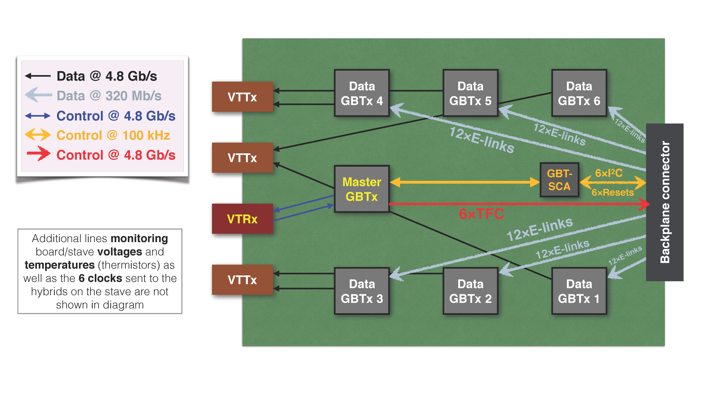
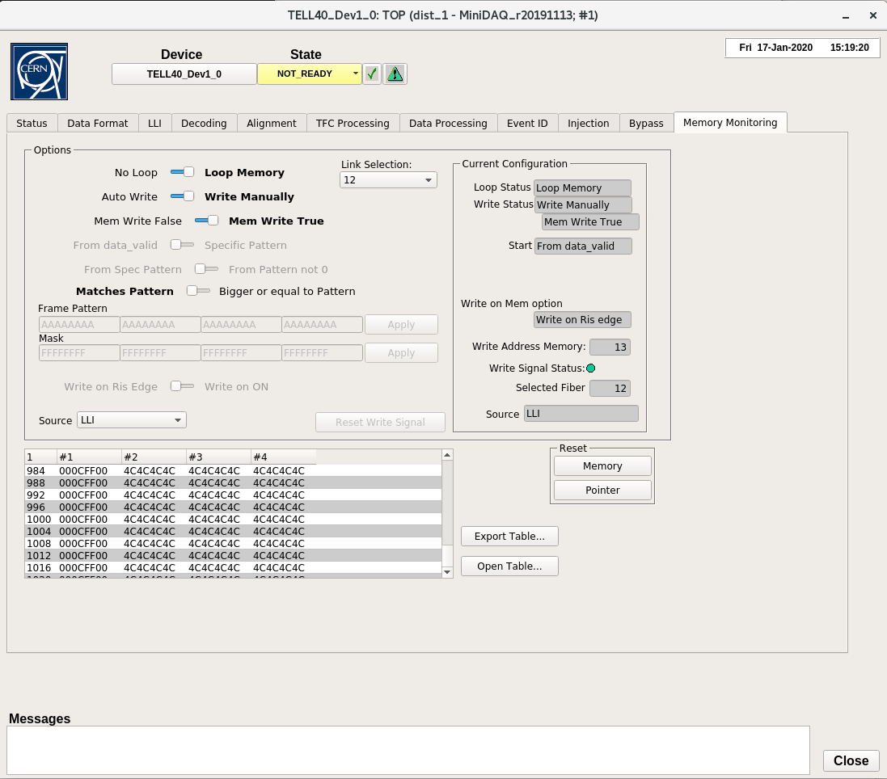
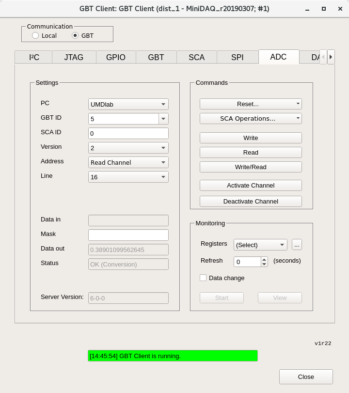

DCB QA
The DCB has a few purposes; aggregating data, controlling the stave, and monitoring. It has 4 optical mezzanines with 3 VTTxs and 1 VTRx, as well as 1 master GBTx, 1 GBT-SCA, and 6 data GBTxs. The DCB talks to the stave through the Backplane connecter and a computer through the mezzanines.

The PRBS test checks the DCB ability to get data from the GBTxs to the computer. A psuedo-random bit sequence, or PRBS, is generated in the data GBTxs and sent to our computer via the VTTxs. This test verifies the black data lines on the image.
In the SALT test, we tell the stave what data to send to the DCB to check the grey data lines. Each line represents 12 E-links connecting the stave to the GBTxs. For our tests, we have the stave sending "c4" repeated to the DCB. It is easy for this to get out of phase, which is why we accept any stable data in the memory monitor as a success. To see possible out-of-phase responses, you can break "c4" into 8bit binary, shift it one bit left or right, then make it hex again.
We check the DCB control of the stave using the TFC test.
There are also ADCs (analog to digital converters) we look at to verify the power and, for the ones attached to thermistors, monitor the temperature on the DCB itself and the stave.
Setting up DCB
Warning
Make sure you are grounded at all times when handling the DCB!
-
Verify the backplane connector. Do not plug in if its pins are bent, as it can break the backplane.
-
Verify optical mezzanines are attached. They should rest on the long hex nuts, but it is not necessary to screw in the mezzanines to the long hexes.
-
Attach optical fibers to the mezzanines. Two fibers go into each board. They should be sequential except for the two attached fibers which go to the master.
- The order should be something like 1, 2, Masters, 3, 4, 5, 6
-
Correct slot based on stave connection, Not sure if this is a necessary step
- will either be JD10 or JD11
-
Slide DCB into the proper slot using the heat spreader pipes as handles. Let it gently go down until until the guide rails at the bottom go in and the DCB sits correctly. Then push until it clicks in.
Checking Power
There are 3 seperate power lines, for the DCB, the VTTx's, and the Stave. They should not be moved or changed over the course of this QA, but it is good to verify the connections are correct.
-
DCB
- Power comes to pairs of boards as labeled by the slot they are put in. 0 and 1, 2 and 3, etc...
- Cables are labeled
DCB-Asource & return andDCB-Bsource & return. A goes to the even board of a pair, slot JD10, and B goes to the odd board, JD11. SRCconnects to the hevily labeled wire andRETconnects to ground.
-
VTTx
- Similar power setup to DCB, one set
VTTx Mand the other justVTTxwith each having aSRCandRET. - It doesn't matter which set gets connected to the inputs, as long as the sets are kept together.
- Connection is the same as DCB,
SRCgoes to the heavily labeled wire andRETgoes to ground.
- Similar power setup to DCB, one set
-
Stave
- There's P1, P2, P3, and P4 which each have
SRCandRET. Make sureP1 SRCgoes toP1 SRCand so on for all 8 wires.
- There's P1, P2, P3, and P4 which each have
Fusing GBTx
First, connect the usb dongle to the master optical mezzanine.
Note
check this is right, add pic if so
-
Open the GBTX Programmer on the windows PC
-
Click Import Image and load the config file, it should be called something like
master.txt -
Click Write GBTX then click Read GBTX
- It should return a value similar to
Idle, 18'h
- It should return a value similar to
On the Linux computer, we'll use nanoDAQ which gives some MiniDAQ functions
in Python. Go to $HOME/src/nanoDAQ in a command line on the server to use.
Also open MiniDAQby going to Applications, WinCC,
Project Administrator, then double click on the top project.
Programming Data GBTxs
There are 6 data GBTxs on each DCB, and these must be programed everytime the board gets power cycled.
Note
NanoDAQ has some documentation here.
A pdf that goes over a lot of MiniDAQ and GBTx usage can be downloaded
here.
-
In the nanoDAQ command prompt, we're going to pull the reset, also called gpio, low and try to program it then high and try to program it.
-
First, enter
./dcbutil.py gpio --reset 0 1 2 3 4 5 6 --final_state lowto pull all resets low. Then attempt to program the GBTxs with./dcbutil.py init ./gbtx_config/slave-Tx-wrong_termination.txt -g 0- You should get an error
-
Now do the reverse by changing --final_state to high to enter
./dcbutil.py gpio --reset 0 1 2 3 4 5 6 --final_state highYou should now be able to program the GBTxs with the command you inputted earlier.
PRBS Test
Note
This is the MiniDAQ "Top" panel that is referenced a couple times. Most menus can be found starting from this panel.

-
To start PRBS, go to the nanoDAQ command line and enter
./dcbutil.py prbs on -
Open the PRBS panel by going to the top MiniDAQ hardware panel and clicking PRBS.
- In the top left of the panel, click in order:
Stop All Generators → Stop All Checkers → Reset All Counters →
Start All Generators → Start All Checkers → Start All Counters

- In the top left of the panel, click in order:
-
Allow test to run for 1-5 minutes. It passes if there are 6 green channels shown on the PRBS panel.
- The picture shows 6 red ones. These are the correct channels and should be green if everything passes
-
Check if the DCB can regain lock by unplugging the master optical fibers then plugging them back in. Remember, master are the ones connected.
- Enter
./dcbutil.py prbs offin the nanoDAQ command line. No output is a success, otherwise it will report "Master GBT not locked"
- Enter
SALT Testing
For this step, we need to open the Memory Monitoring panel in MiniDAQ. In the Top panel, double click DAQ to open a new window, then keep double clicking TELL40 until the following panel shows up, with the tab for Memory Monitoring on the right.
Note
The last TELL40 has a suffix, it doesn't matter which one you double click.

-
In nanoDAQ, type in the command
./dcbutil.py gpio --reset 0 1 2 3 4 5 --final_state low- Now type
./saltutil.py [I2C] read 0 0 1replacing the [I2C] with 3, 4, and 5 if the DCB is in slot JD10. - Replace with 0, 1, 2 if the DCB is in slot JD11
- You have to enter this command 3 times, once for each number.
- Now type
-
If it is working correctly you'll get an error. Then repeat the process but change the final state to high. You should get a result.
./dcbutil.py gpio --reset 0 1 2 3 4 5 --final_state high
-
The following is for a DCB in slot JD10 only
- Start with
./saltutil.py 4 initfor I2C 4 - Type
./dcbutil.py init ~/bin/tmp_0.xml -s 1to work with GBT 1 - Go to the memory monitoring panel and select link 22 at the top
- Verify that Write Address Memory on the right changes values every couple seconds and Write Signal Status is green.
- Now look at the table, focusing on the latter 3 columns. There are 8
digits in each column. If they are NOT stable values,
go to nanoDAQ and type
./dcbutil.py init ~/bin/tmp_1.xml -s 1- keep incrementing the
tmp_*.xmluntil the values are stable.
- keep incrementing the
- Repeat this process starting with
./saltutil.py 3 initfollowed by./dcbutil.py init ~/bin/tmp_0.xml -s 2- Link Selection must be on 12 now
- When incrementing
tmp_*.xmlkeep using "-s 2"
- Repeat again with
./saltutil.py 5 initfollowed by./dcbutil.py init ~/bin/tmp_0.xml -s 6- Link Selection must be on 13
- Start with
Note
Refer to this table if instructions are unclear as to what numbers you should be using.
| Slot | GBT | I2C | Link Selection |
|---|---|---|---|
| JD10 | 1 | 4 | 22 |
| JD10 | 2 | 3 | 12 |
| JD11 | 3 | 2 | 23 |
| JD11 | 4 | 1 | 21 |
| JD11 | 5 | 0 | 14 |
| JD10 | 6 | 5 | 13 |
- The following is for a DCB in slot JD11 only
- Start with
./saltutil.py 2 initfor I2C 2 - Type
./dcbutil.py init ~/bin/tmp_0.xml -s 3to work with GBT 3 - Go to the memory monitoring panel and select link 23 at the top
- Verify that Write Address Memory on the right changes values every couple seconds and Write Signal Status is green.
- Now look at the table, focusing on the latter 3 columns. There are 8
digits in each column. If they are NOT stable values,
go to nanoDAQ and type
./dcbutil.py init ~/bin/tmp_1.xml -s 3- keep incrementing the
tmp_*.xmluntil the values are stable.
- keep incrementing the
- Repeat this process starting with
./saltutil.py 1 initfollowed by./dcbutil.py init ~/bin/tmp_0.xml -s 4- Link Selection must be on 21 now
- When incrementing
tmp_*.xmlkeep using "-s 4"
- Repeat again with
./saltutil.py 0 initfollowed by./dcbutil.py init ~/bin/tmp_0.xml -s 5- Link Selection must be on 14
- Start with
TFC Test
-
Type
./saltutil.py [I2C] ser_src tfcreplacing the [I2C] with 3, 4, and 5 if the DCB is in slot JD10.- Replace with 0, 1, 2 if the DCB is in slot JD11
-
Look in memory monitoring again and select links based on slot
- Same as SALT. JD10 gets links 22, 12, and 13. JD11 gets links 23, 21, and 14
-
The values in the table should be something similar to 01, 02, 04, or 08 repeating
ADC Read Out
If there is no MiniDAQ panel called GBT Client already open, open it by going back to the MiniDAQ UI (the one with "Gedi" in its title) and under LHCB Framework, click GBT Client. Choose GBT under Communication on the top left. Now navigate to the ADC tab.

-
Configure settings as follows - PC: UMDlab, GBT ID: 0, SCA ID: 0, Version: 2
- For now, set address to "Read Channel" and line to 24 then 25. Clicking read on the right updates the "Data out" field.
- Line 24 should be around 0.5 and line 25 should be around 0.
- If you're getting an error, try clicking "Activate Channel" then try again
-
When looking in slot JD10
- Also read out lines 5, 6, and 7. They should all be 0.55
-
When looking in slot JD11
- Also read out lines 2, 3, and 4. They should all be 0.55
-
Change address to "Current Source" and put
FFFFFFFF(8 Fs) in "Data in", then click read/write -
Put address back to "Read Channel" and check lines 0, 1, 16, 17, and 18 by clicking read and looking at "Data in"
- Line 0 expected value is 0.53
- Other lines expected value 0.15